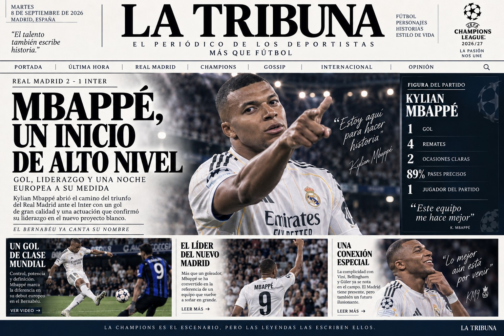
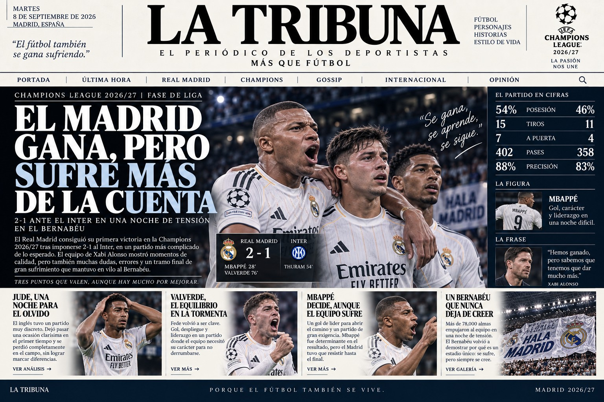
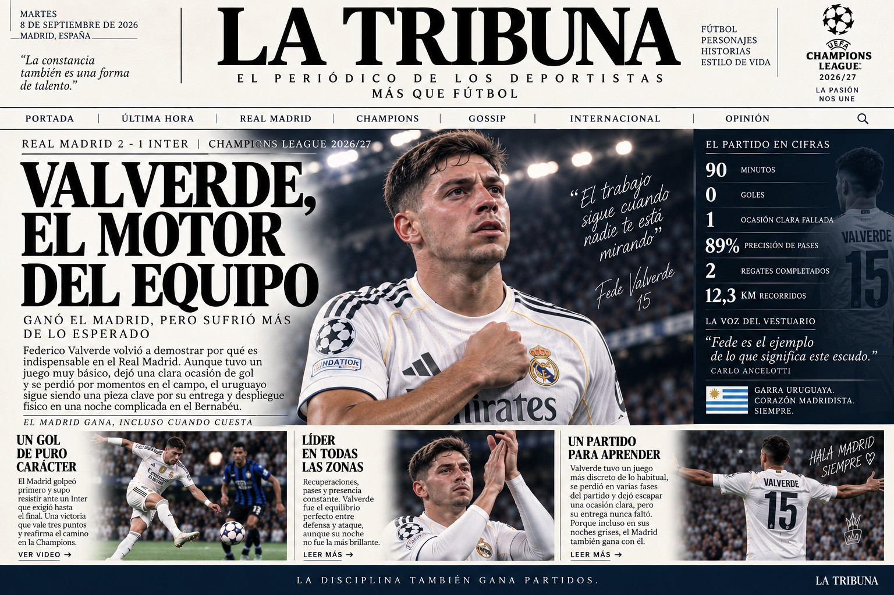
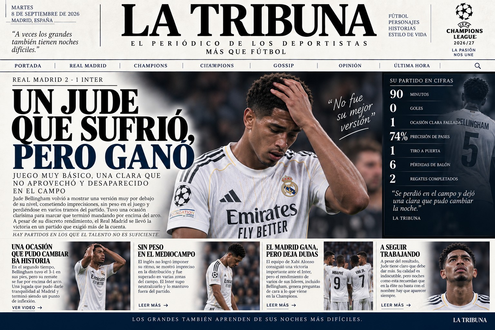
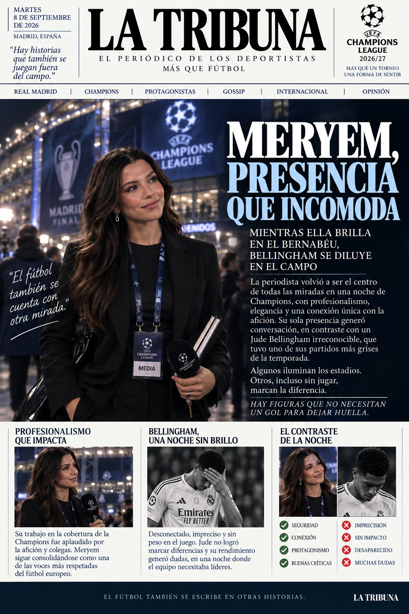
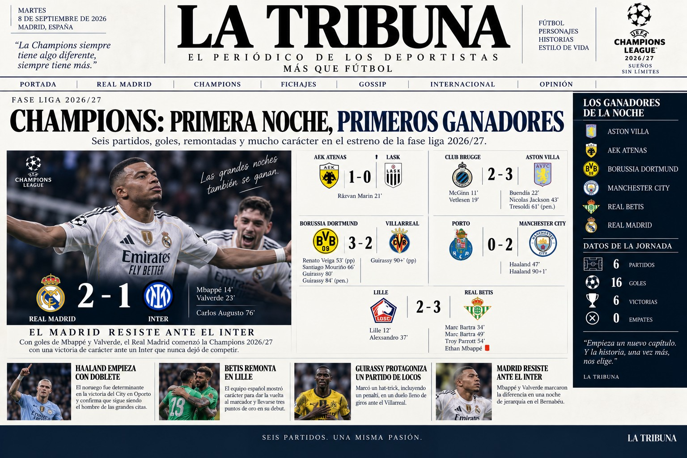

Mbappé, un inicio de alto nivel
Gol, liderazgo y protagonismo en una noche europea exigente.
EL PERIÓDICO DE LOS DEPORTISTAS
MÁS QUE FÚTBOL
El Real Madrid abre su camino europeo con una victoria ante el Inter en una noche de tensión en el Bernabéu.
LEER LA COBERTURA
Gol, liderazgo y protagonismo en una noche europea exigente.

Entrega, despliegue y carácter cuando el partido más lo necesitaba.

La Champions regresó a Madrid y el estadio volvió a ser protagonista.

Un análisis directo de una actuación básica, con una clara ocasión desperdiciada y poca influencia en el juego.
Tres puntos importantes no esconden todo lo que el equipo deberá corregir.
Cuando el partido se complicó, apareció el uruguayo para aportar equilibrio.

Todos los resultados de la jornada del martes 8 de septiembre de 2026, reunidos en una sola edición especial.
Mientras las miradas se multiplican fuera del campo, dentro del terreno hubo actuaciones que no estuvieron a la altura de la noche.
Una mirada profesional, elegante y arrolladora sobre el partido: sin necesidad de exagerar, los detalles hablan. Bellingham tuvo una noche gris, sin peso suficiente para marcar diferencias y con una ocasión clara que terminó desperdiciada.
“Hay noches en las que el talento no alcanza. También se necesita presencia.”
— Meryem Brown, La Tribuna
El resultado importa, pero también importa cómo se llegó a él. La Tribuna analiza las señales positivas y las dudas que deja el estreno europeo.
La presencia de la periodista en el Bernabéu no pasó desapercibida.
Champions, focos y mucho movimiento alrededor del estadio.